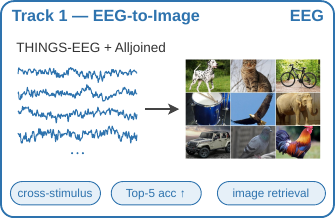

Track 01
OPEN

EEG-to-IMG
Decodes which image a subject is viewing from a single EEG epoch, evaluated as ranking against held-out candidates. Targets are frozen DINOv2-giant embeddings, so the difficulty is in the EEG side, not in re-learning the image space. The controlled shift is cross-stimulus: test stimuli are unseen during training.
Visual retrieval
DINOv2
RSVP
Object viewing
Metric: Top-5 acc · Sponsor: Alljoined
Track details →